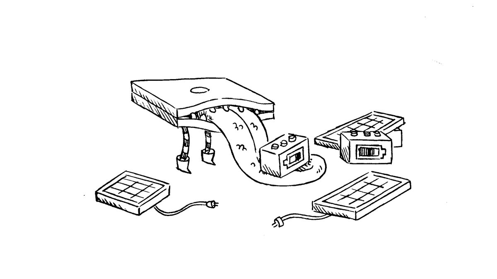
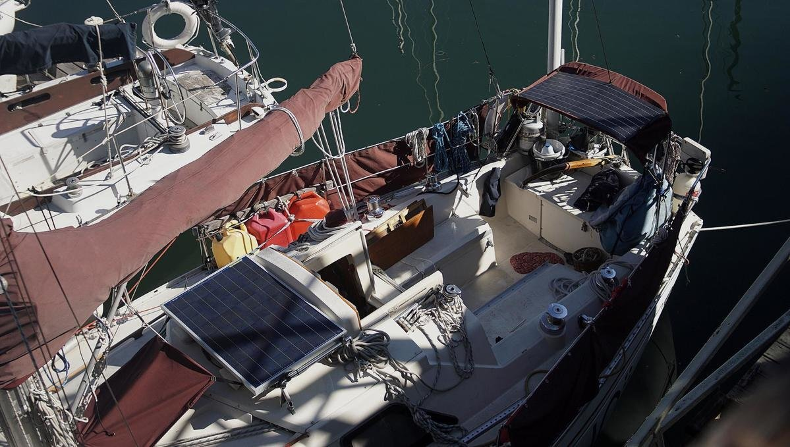

energy
We have 2 solar panels(1x90W + 1x100W). Our engine has a 75 A Balmar alternator, but it is only used to charge the house and starter batteries on cloudy days, which is not terribly often (last time was in 2020, while in the north pacific ocean. Generally, 190W is enough to keep us powered throughout the day. We used to have a small Honda gas generator, but we sold it in 2020 (again, solar is enough).
We have a total of 464Ah. We have lead-acid flooded-cell batteries. Our banks consist of a series configured starter bank (2x6 Volt Cells) and a series-parallel configured house bank (2x6 V cells). Both sets are identical, equalling 12 V each. Because they're identical, we often use both as house banks. If this is your planned usage, keep in mind that using both banks will mean that they will degrade together, and if they fail you'll be left with no power of any kind. This is a big risk to take. We keep an eye on our batteries, to make sure to replace them before they fail.
We don't have a windlass, pressure faucet, water heater or a fridge (see refrigeration). Because of this, it's easy to keep our power consumption low, reducing our need for extra solar, keeping our costs down and reducing the amount of things that can break, or fail.
solar
2021.06.03
Our current solar setup
- Solara S365P36 Ultra90W hard polycrystalline panel (in front of companionway)
- Flexible monocrystalline ETFE 100W panel (on mini-bini top)
- ProStar-15 Solar Controller
Timeline
- 04.2016 Bought one 80W (in front of mast) and a 100W flexible panels (on bimini)
- 11.2017 80W panel connections corroded, dead. Moved 100W to dodger.
- 02.2018 Bought two used hard 90W polycrystalline panels, installed both over bimini.
- 09.2018 Too much windage aft, no panels on bimini anymore. Placed one aft seat, with second stored inside underway.
- 08.2019 Plastic on 100W flexi began to part from cells.
- 06.2020 Lost 100W flexi panel & dodger after big wave in North Pacific Ocean.
- 04.2021 Sold one of two hard 90W panels.
- 06.2021 Bought and installed new 100W ETFE flexi panel on mini-bini.
- 01.2023 Moved solar controller, and added an on/off switch between controller and panel.
- 03.2023 Noticed ETFE panel covering was starting to part... great. Panel may have too aggressive of a bend.
- 04.2023 Replaced all solar wiring. Lots of creeping corrosion. MC4 connectors arent as waterproof as advertised.
We had two hard 90W panels once, but we sold one. We would have preferred to keep both, but while long-lasting (compared to flexis) they are heavy, and Pino's topsides could not accommodate the second in a safe and affordable way.
Flexis will never rival hard panels. All the ones we've owned have either cracked, or delaminated. Get a flexi at your own risk.
Solar versus The Ocean
We've experimented a lot with our solar setup, due to equipment failure (corrosion) or complete loss.
We prefer to keep our solar panel setup small, because too many panels on deck is cumbersome, it is also dangerous—a large wave, or strong wind, will take gear that you thought secure in a second. In the words of Lin Pardey: "Anything on deck is sacrificial".
Different kinds of panel (monocrystalline, poly etc) will be better in specific situations, and their placement on deck will also affect daily amperage. We positioned a 80W flexi in front of the mast, but that area is prone to wave wash, and the panel wiring corroded within two years. The flexi wiring was not weatherproof—it is possible it was not rated for marine use, we wrongly assumed it was. The 100W flexi lasted longer, but the plastic covering the cells was not UV resistant and began to part in 2020. The two hard 90W Solara panels did not suffer damage. The wiring is well-protected (IP65 waterproof junction box) and the tempered solar glass is very tough. One 90W suffered the wave event, it was thrown from its perch, but it did not break (and still works today 23/01/09).
For information on installing solar panels on your boat, see our solar_tips.